Praktikum ini bertujuan menggabungkan hasil Praktikum 1 sampai 5
(widget, layout, form, navigasi, named routes dan bottom
navigation) menjadi satu project aplikasi
Expense Tracker. Setelah praktikum, mahasiswa mampu: (1)
menyimpan data secara permanen dengan
SQLite (sqflite) sehingga data tidak
hilang saat aplikasi ditutup; (2) membuat fitur
register dan login dengan data pengguna di
penyimpanan lokal; (3) membuat video penjelasan aplikasi; dan (4)
menghasilkan file APK.
Desain UI/UX praktikum dipertahankan, kecuali halaman login dan register yang merupakan halaman baru.
SQLite adalah database relasional ringan yang
tersimpan sebagai satu file di perangkat. Pada Flutter, package
sqflite dipakai untuk membuat tabel dan menjalankan
query (insert, query, delete). Karena akses database memakan
waktu, semua operasinya bersifat
asinkron (Future,
async, await).
SharedPreferences menyimpan data kecil berpasangan kunci-nilai; di sini dipakai untuk sesi login (id pengguna yang sedang masuk). Hash SHA-256 mengubah password menjadi deretan karakter satu arah, sehingga password asli tidak disimpan di database.
Konsep dari praktikum sebelumnya yang tetap dipakai:
StatelessWidget/StatefulWidget dan
setState (P1),
Row/Column/ListTile (P2),
Form/validator/showDatePicker
(P3), Navigator.push/pop dan passing data lewat
constructor (P4), serta named routes dan
BottomNavigationBar (P5).
- Flutter SDK, Dart, Visual Studio Code, dan Android Studio (Android SDK, NDK)
- Emulator Pixel 6 dan HP Android (untuk uji APK)
-
Package:
sqflite,path,shared_preferences,crypto,cupertino_icons - Database Inspector (Android Studio) untuk melihat isi tabel
Bagian ini menjelaskan urutan pengerjaan dari awal sampai akhir. Ikuti urutan nomor berikut; setiap nomor mengarah ke langkah rinci beserta tangkapan layar dan penjelasan kodenya.
-
Persiapan lingkungan dan membuat project
(Flutter, Android Studio, SDK, folder
lib) -
Menambahkan dependency di
pubspec.yaml -
Membuat model data
(
AppUser,TransactionModel) -
Membuat database SQLite
(
database_helper.dart) karena dipakai semua halaman -
Membuat sesi login dan hash password
(
session.dart,helpers.dart) -
Mendaftarkan named routes
di
main.dartdan membuat splash - Membuat halaman Register dan Login
-
Membuat
MainScreendengan Bottom Navigation Bar - Membuat Dashboard (saldo, ikon mata, daftar transaksi)
- Membuat form Tambah Transaksi (validasi, dropdown, tanggal)
- Membuat Riwayat dan Detail Transaksi
- Membuat halaman Profil dan Logout
- Menjalankan dan menguji seluruh fitur, termasuk isi database
- Merekam video penjelasan
- Membangun APK dan memasangnya di HP
Catatan urutan: file database_helper.dart dan
session.dart dibuat lebih dulu (langkah 4 dan 5)
karena dipanggil oleh dashboard, form, riwayat, login, dan profil.
Dua bagian itu tertulis pada bagian Latihan (E) karena merupakan
tambahan dari ketentuan tugas akhir.
Sebelum membuat project, pastikan Flutter SDK sudah terpasang
dan terdaftar di PATH. Buka terminal lalu periksa
versinya.
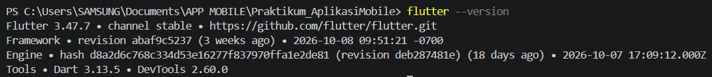
Perintah pemeriksaan:
-
flutter --version— menampilkan versi Flutter, channel, dan versi Dart bawaan -
flutter doctor— memeriksa seluruh komponen (Flutter, Android toolchain, editor, perangkat) -
flutter upgrade— memperbarui Flutter ke versi stabil terbaru
Android Studio dibutuhkan untuk Android SDK, emulator, dan Database Inspector. Setelah instalasi, lengkapi komponen lewat SDK Manager.
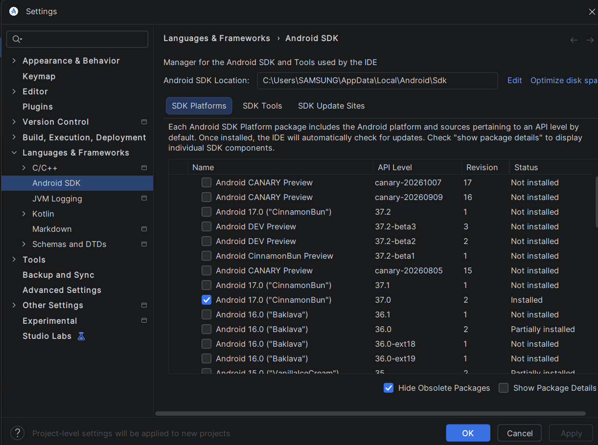
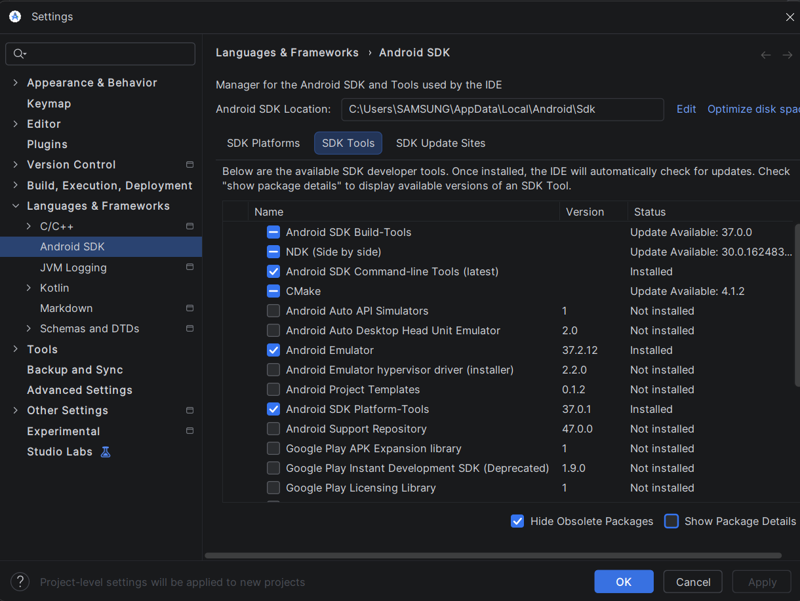
Komponen di tab SDK Tools:
-
Android SDK Command-line Tools (latest)— alat baris perintah yang dibutuhkan Flutter -
Android SDK Platform-Tools— berisiadbuntuk menghubungkan perangkat -
Android Emulator— menjalankan perangkat virtual -
NDK (Side by side) 28.2.13676358— dibutuhkan Gradle saat build aplikasi
Jalankan flutter doctor dan pastikan bagian
Android toolchain bertanda centang.

Cara membaca hasil:
[√]— komponen siap dipakai
Project dibuat lewat terminal, lalu dibuka di VS Code.
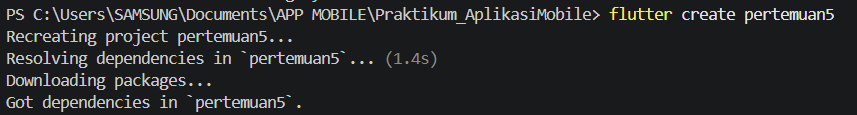
expense_tracker berhasil
dibuat
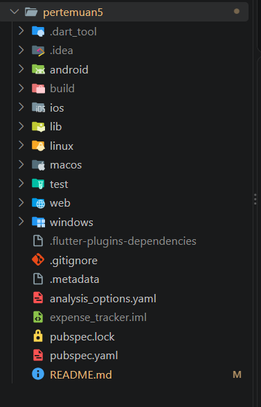
Langkah dan isi project:
-
flutter create expense_tracker— membuat folder project besertaandroid/,ios/,lib/,pubspec.yaml -
cd expense_tracker— masuk ke folder project; perintah Flutter lain harus dijalankan dari sini -
lib/main.dart— berisi contoh aplikasi counter yang akan diganti seluruhnya -
pubspec.yaml— konfigurasi project dan daftar package
Setelah project dibuat, aplikasi dijalankan lewat terminal di folder project untuk memastikan lingkungan bekerja.
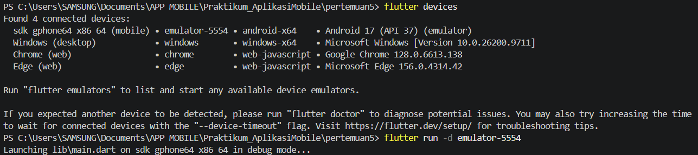
Perintah yang dipakai:
-
flutter devices— menampilkan perangkat Android yang terhubung -
flutter run— membangun dan menjalankan aplikasi di perangkat yang dipilih -
r / R / q— hot reload, hot restart, keluar
sqflite (SQLite bawaan
Android), sehingga dijalankan di emulator Android atau HP
Android, bukan di browser.
Folder-folder dibuat di dalam lib agar kode
terpisah berdasarkan fungsinya, dan semua file praktikum
dipindahkan ke folder yang sesuai.
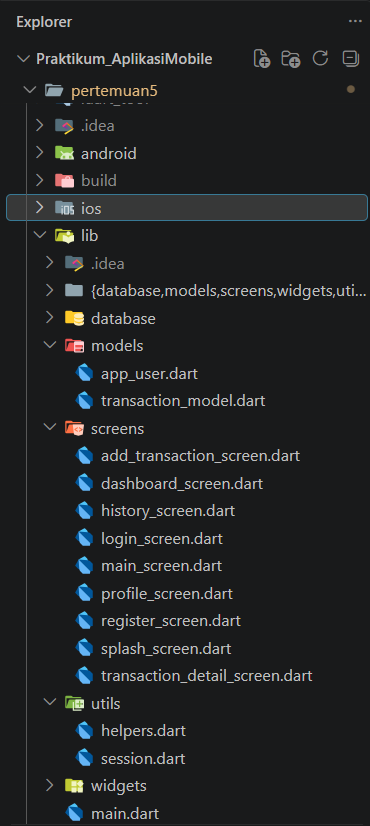
database,
models, screens,
widgets, utils dan
main.dart
Pembagian tugas folder:
-
database/—database_helper.dart, pengelola SQLite -
models/— class data pengguna dan transaksi screens/— seluruh halaman aplikasi-
widgets/— komponen yang dipakai ulang (transaction_tile.dart) utils/— sesi login dan fungsi bantu
Buka pubspec.yaml di root project, lalu tambahkan
package di bawah dependencies.
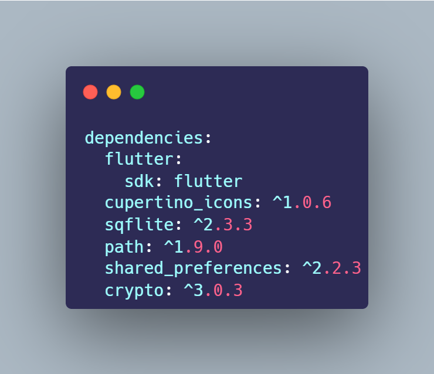
pubspec.yaml — Menambahkan
dependency
Setiap package punya peran sendiri:
-
sqflite: ^2.3.3— akses database SQLite di Android -
path: ^1.9.0— menyusun lokasi file database denganjoin -
shared_preferences: ^2.2.3— menyimpan sesi login (id pengguna) -
crypto: ^3.0.3— membuat hash SHA-256 untuk password cupertino_icons— ikon bawaan template
Setelah file disimpan, package diunduh lewat terminal di folder project.
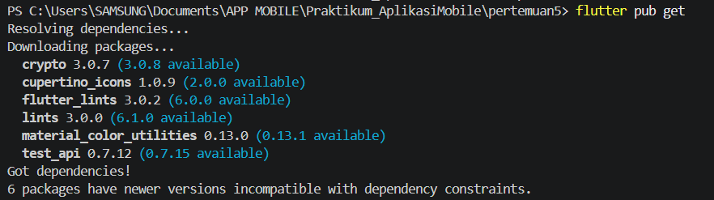
pubspec.yaml — Menjalankan
flutter pub get
Hal yang terjadi:
-
flutter pub get— mengunduh semua package dan memperbaruipubspec.lock -
terminal tanpa error— menandakan package siap di-importdi file Dart
users dibungkus
menjadi objek AppUser agar kode lain bekerja dengan
objek, bukan Map mentah. Password sengaja tidak
dimasukkan supaya tidak terbawa ke tampilan.
Buat file lib/models/app_user.dart. Di dalamnya
dibuat class dengan tiga properti.
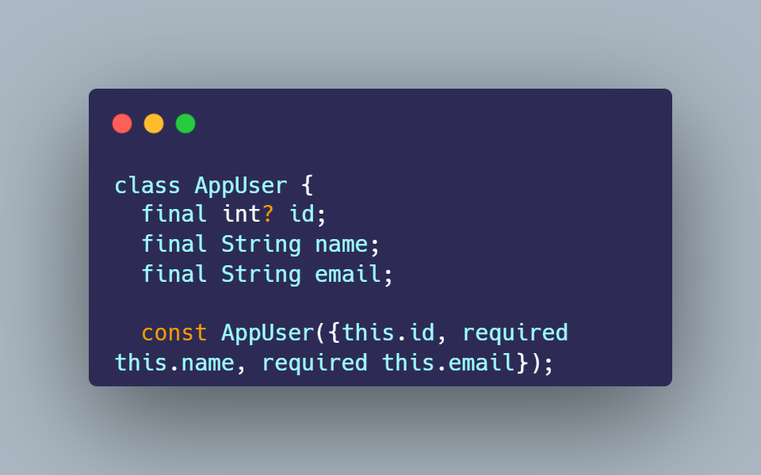
app_user.dart — Class
AppUser: properti dan constructor
Class ini berupa OOP sederhana:
-
final int? id— id dari database; bernilainullsebelum disimpan -
final String name, email— nama dan email pengguna -
const AppUser({this.id, required this.name, required this.email})— constructor dengan named parameter;requiredmewajibkan data diisi
Method pembuat objek dari satu baris hasil query.
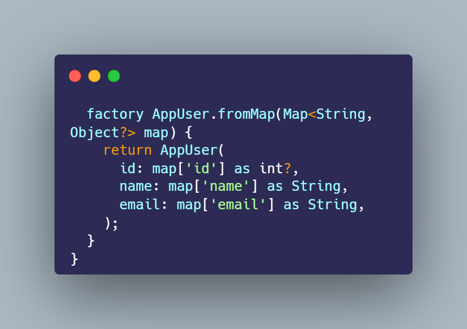
app_user.dart — Factory
AppUser.fromMap()
Mengubah data database menjadi objek:
-
Map<String, Object?> map— satu baris tabelusers -
map['id'] as int?— mengambil kolom lalu mengubah tipenya -
factory— constructor yang boleh mengembalikan objek baru berdasarkan logika tertentu
Buat file lib/models/transaction_model.dart.
Properti disusun sesuai kolom tabel transactions.
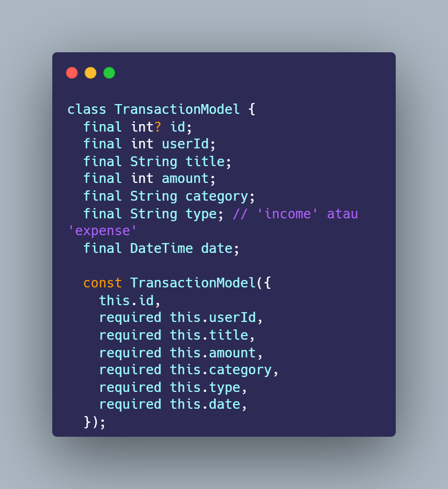
transaction_model.dart —
Class TransactionModel: properti dan constructor
Satu properti mewakili satu kolom:
-
final int userId— pemilik transaksi (kolomuser_id) -
final int amount— nominal rupiah sebagai angka bulat -
final String type— berisiincomeatauexpense final DateTime date— tanggal transaksi-
required this.title ...— semua data wajib diisi saat objek dibuat
Dua anggota class yang mempermudah pemakaian model.
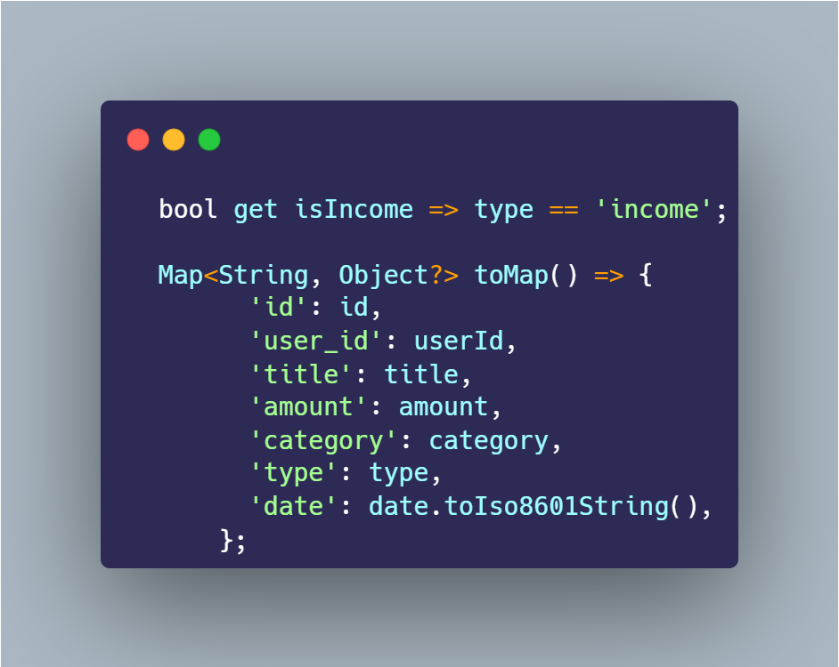
transaction_model.dart —
Getter isIncome dan method toMap()
Fungsi masing-masing:
-
bool get isIncome => type == 'income'— getter praktis untuk menentukan warna dan tanda +/- -
toMap()— mengubah objek menjadiMapyang siap di-insertke tabel -
'date': date.toIso8601String()— tanggal disimpan sebagai teks ISO 8601
Kebalikan toMap: baris database menjadi objek.
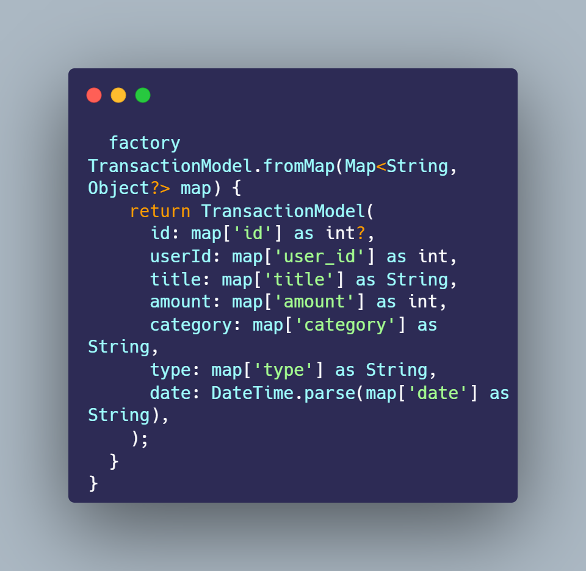
transaction_model.dart —
Factory TransactionModel.fromMap()
Konversi dari database:
-
map['amount'] as int— mengambil nominal sebagaiint -
DateTime.parse(map['date'] as String)— mengembalikan teks tanggal menjadiDateTime
Buat file lib/main.dart. Tulis import halaman dan
fungsi main.
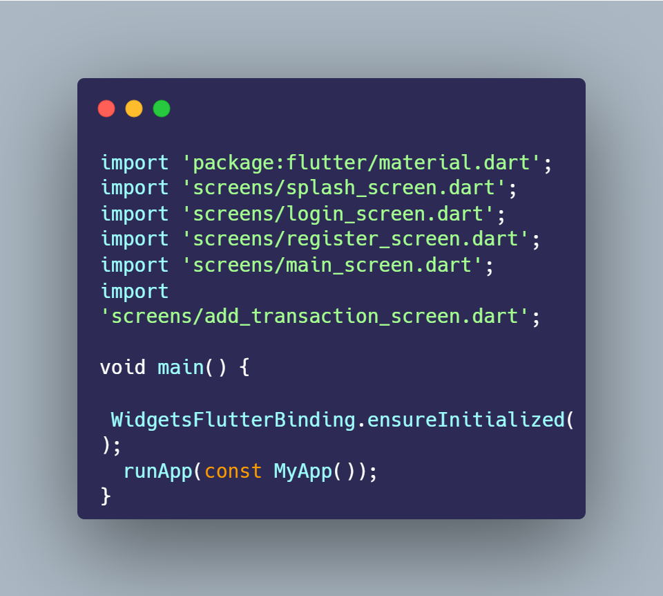
main.dart — Import dan
fungsi main()
Fungsi main adalah pintu pertama program Dart:
-
import 'screens/...'— menghubungkanmain.dartdengan halaman-halaman yang dirutekan -
WidgetsFlutterBinding.ensureInitialized()— memastikan binding Flutter siap sebelum plugin (database, preferences) dipakai -
runApp(const MyApp())— menjalankan widget akar aplikasi
Widget akar berupa StatelessWidget.
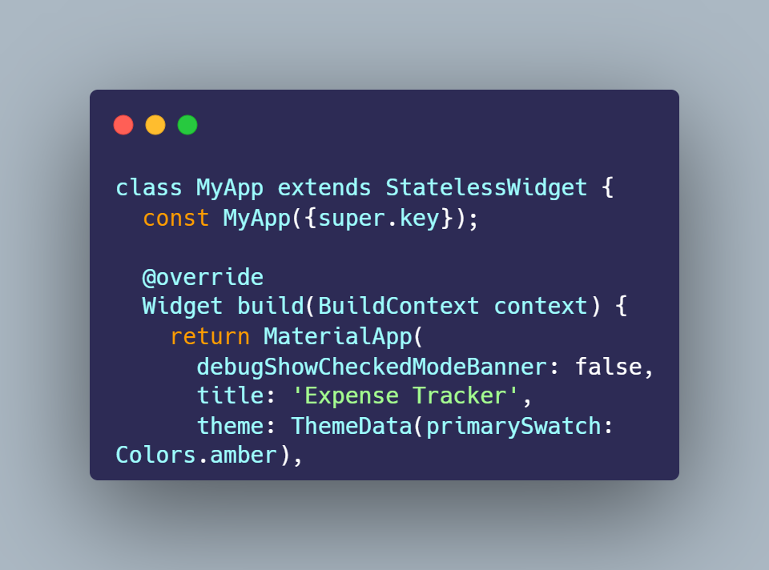
main.dart — Class MyApp dan
MaterialApp
Pengaturan umum aplikasi:
-
debugShowCheckedModeBanner: false— menyembunyikan pita DEBUG -
title: 'Expense Tracker'— judul aplikasi -
theme: ThemeData(primarySwatch: Colors.amber)— warna tema amber sesuai desain praktikum
Parameter home diganti
initialRoute dan routes.
MaterialApp.
Berpindah halaman cukup memanggil
Navigator.pushNamed, tanpa menulis
MaterialPageRoute berulang, sehingga navigasi
terpusat dan tidak berantakan saat halaman bertambah.
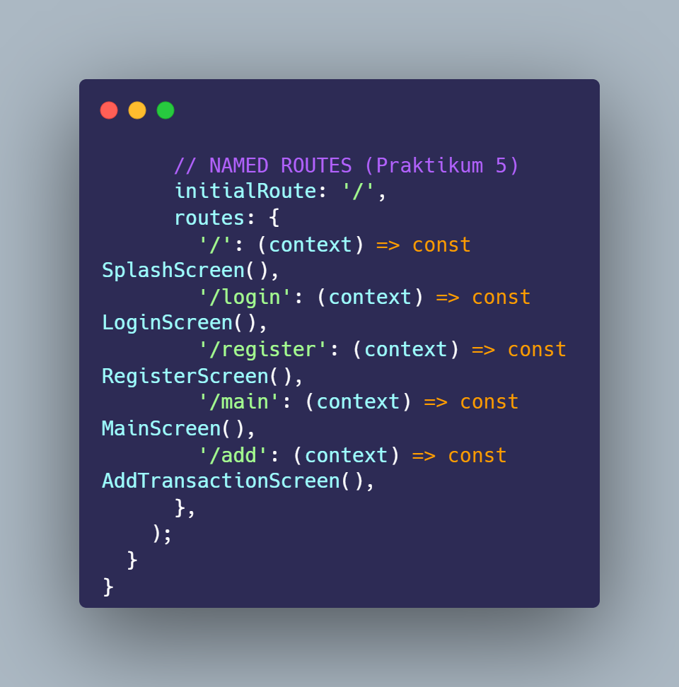
main.dart — Named routes:
initialRoute dan routes
Peta nama rute ke halaman:
-
initialRoute: '/'— halaman pertama yang dimuat '/' : SplashScreen— pengecek sesi login-
'/login' dan '/register'— halaman login dan register -
'/main'—MainScreendengan tiga tab '/add'— form tambah transaksi-
Navigator.pushNamed(context, '/add')— cara memanggil rute dari halaman mana pun
/main, jika belum ke
/login.
Buat file lib/screens/splash_screen.dart. Dibuat
sebagai StatefulWidget karena menjalankan proses
saat halaman dibuat.
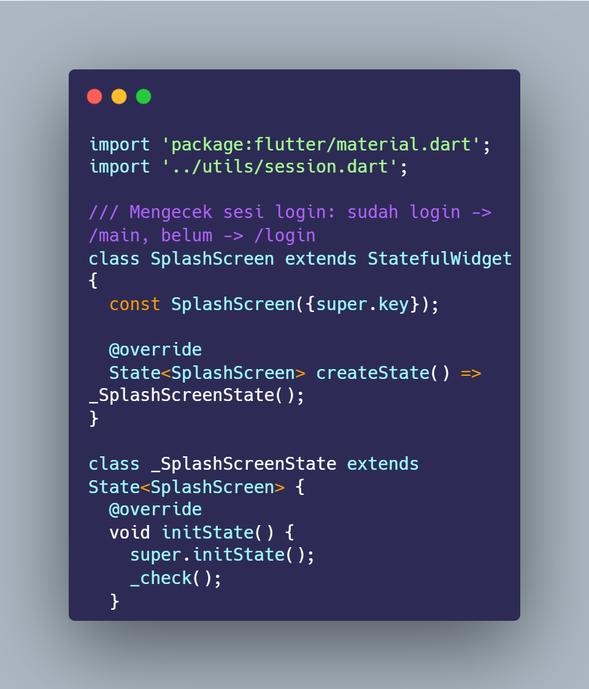
splash_screen.dart — Class
SplashScreen dan initState()
Bagian awal class:
-
initState()— dipanggil sekali saat halaman dibuat -
_check()— dipanggil dariinitStateuntuk mengecek sesi
Inti logika splash.
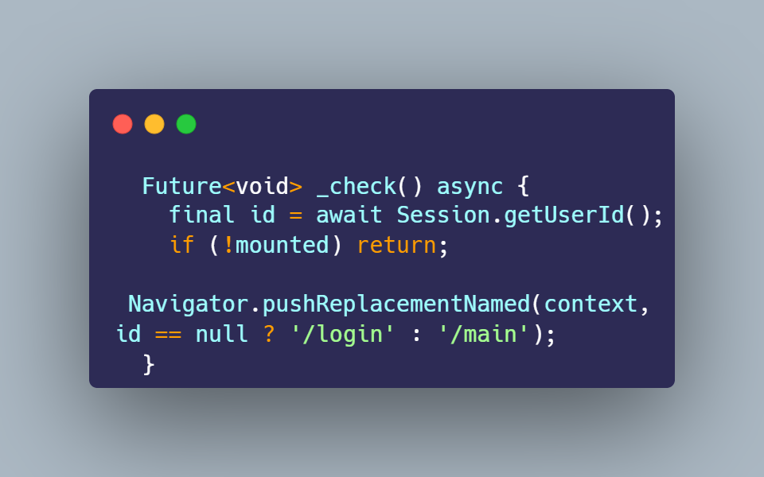
splash_screen.dart — Fungsi
_check()
Alur pengecekan:
-
await Session.getUserId()— membaca id pengguna tersimpan;nullberarti belum login -
if (!mounted) return— memastikan halaman masih aktif setelahawait -
pushReplacementNamed(context, id == null ? '/login' : '/main')— mengganti halaman splash sehingga tombol back tidak kembali ke splash
Tampilan sementara selama pengecekan.
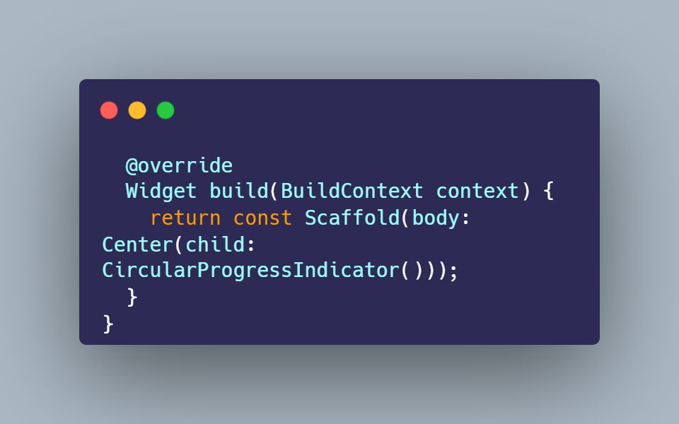
splash_screen.dart — Fungsi
build()
Tampilan yang muncul sekejap:
-
Scaffold(body: Center(...))— kerangka halaman -
CircularProgressIndicator()— indikator putar selama sesi diperiksa
BottomNavigationBar. Mengatur tab mana yang sedang
tampil tanpa berpindah Scaffold (Praktikum 5).
Buat file lib/screens/main_screen.dart. Dibuat
StatefulWidget karena tab aktif berubah.
BottomNavigationBar hanya mengganti
body. Yang berubah adalah nilai
_selectedIndex, sehingga widget ini wajib
stateful. Halaman dibuat ulang saat berpindah tab sehingga
datanya selalu segar dari database.
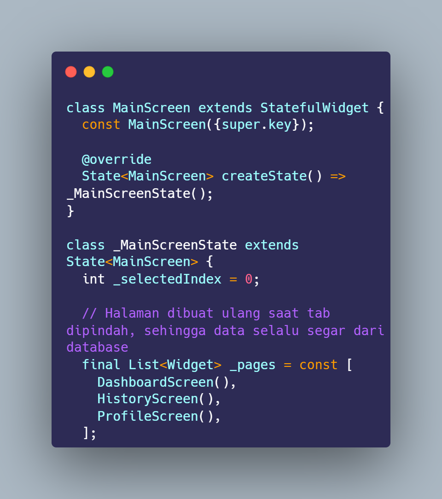
main_screen.dart — State:
_selectedIndex dan daftar _pages
Dua variabel penentu tampilan:
-
int _selectedIndex = 0— indeks tab aktif; 0 = Beranda -
final List<Widget> _pages— daftar halaman: Dashboard, Riwayat, Profil
Dipanggil saat salah satu tab ditekan.
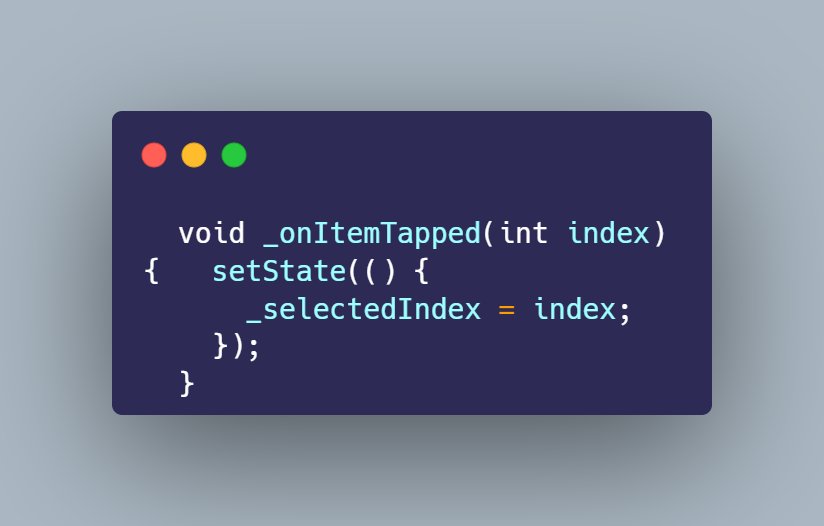
main_screen.dart — Fungsi
_onItemTapped()
Mengganti tab aktif:
-
void _onItemTapped(int index)— menerima indeks tab yang ditekan -
setState(() { _selectedIndex = index; })— memberi tahu Flutter agar tampilan dibangun ulang
Menyusun tampilan utama.
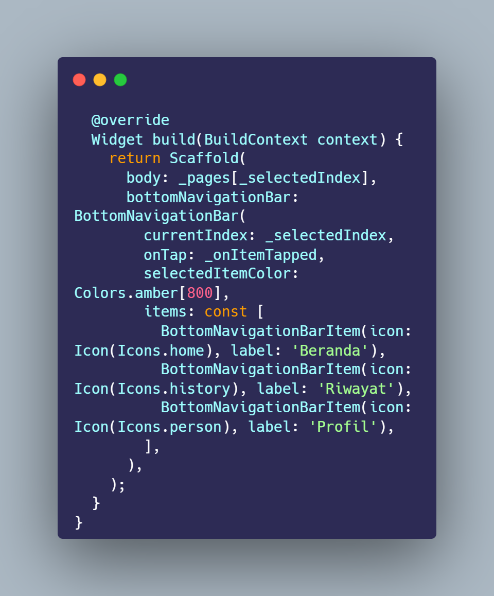
main_screen.dart — Fungsi
build(): Scaffold dan BottomNavigationBar
Bagian-bagian build:
-
body: _pages[_selectedIndex]— menampilkan halaman sesuai tab -
currentIndex: _selectedIndex— menandai tab aktif -
onTap: _onItemTapped— menghubungkan penekanan tab dengan fungsi -
selectedItemColor: Colors.amber[800]— warna tab aktif -
BottomNavigationBarItem(icon, label)— tiga item: Beranda, Riwayat, Profil
Buat file lib/screens/dashboard_screen.dart. Dibuat
StatefulWidget dengan beberapa variabel state.
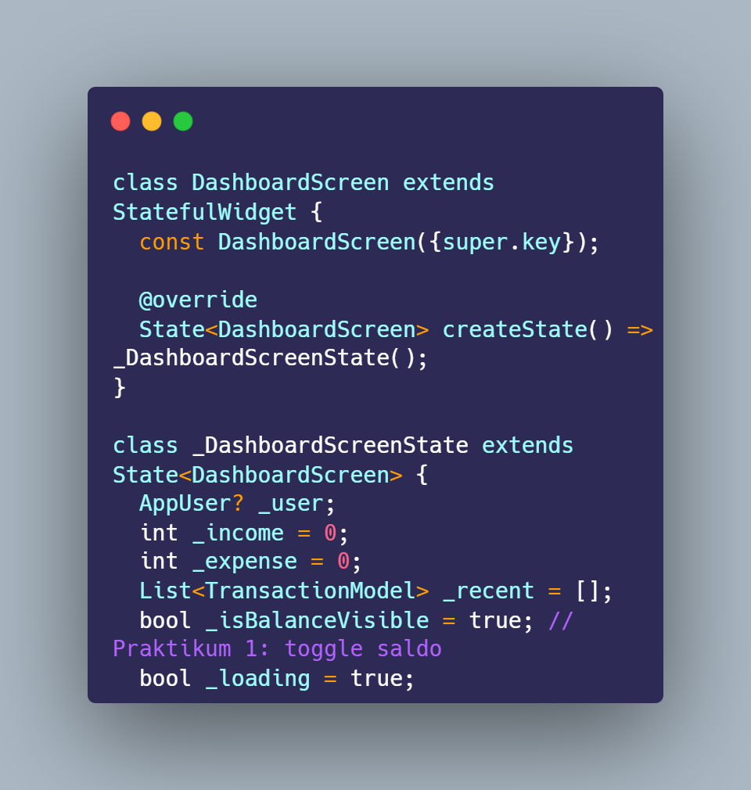
dashboard_screen.dart — Class
dan variabel state
Variabel yang menampung data tampilan:
-
AppUser? _user— pengguna yang sedang login -
int _income, _expense— total pemasukan dan pengeluaran -
List<TransactionModel> _recent— lima transaksi terakhir -
bool _isBalanceVisible = true— status tampil atau sensor saldo (Praktikum 1) -
bool _loading— menampilkan indikator saat data dimuat
Memuat data dari database saat halaman dibuka.
await) lalu
dimasukkan ke state dengan setState.
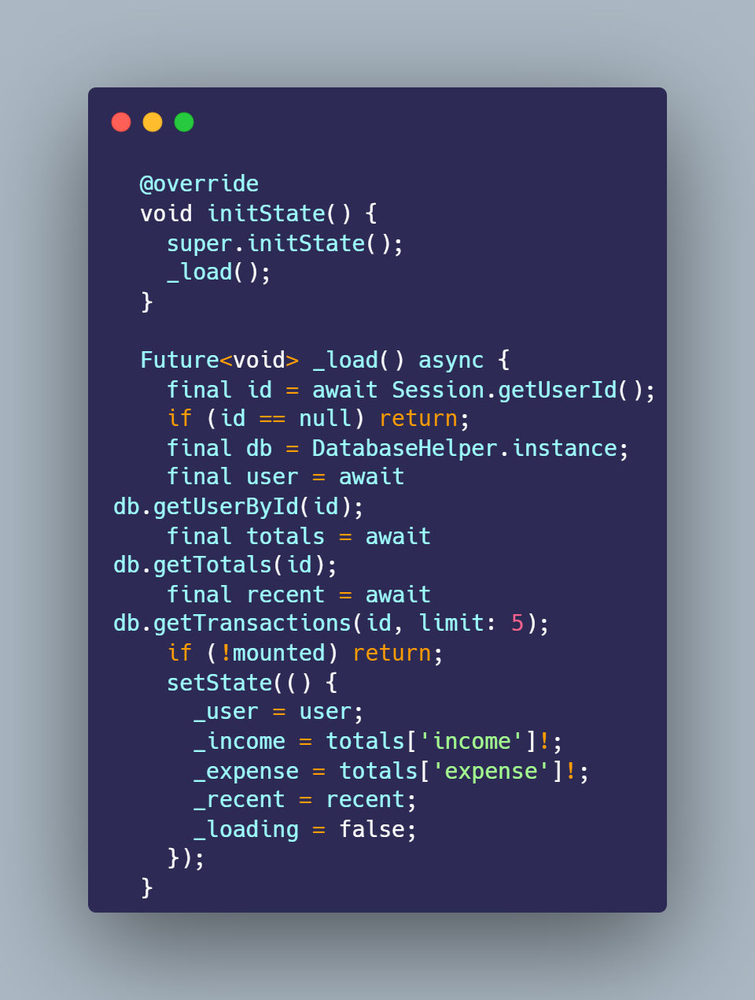
dashboard_screen.dart —
initState() dan fungsi _load()
Alur pemuatan data:
-
await Session.getUserId()— menentukan akun yang login -
db.getUserById(id)— data pengguna untuk sapaan -
db.getTotals(id)— total pemasukan dan pengeluaran -
db.getTransactions(id, limit: 5)— lima transaksi terbaru -
setState(...)— memasukkan hasil ke state sehingga layar dirender ulang
Dua fungsi navigasi dari dashboard.
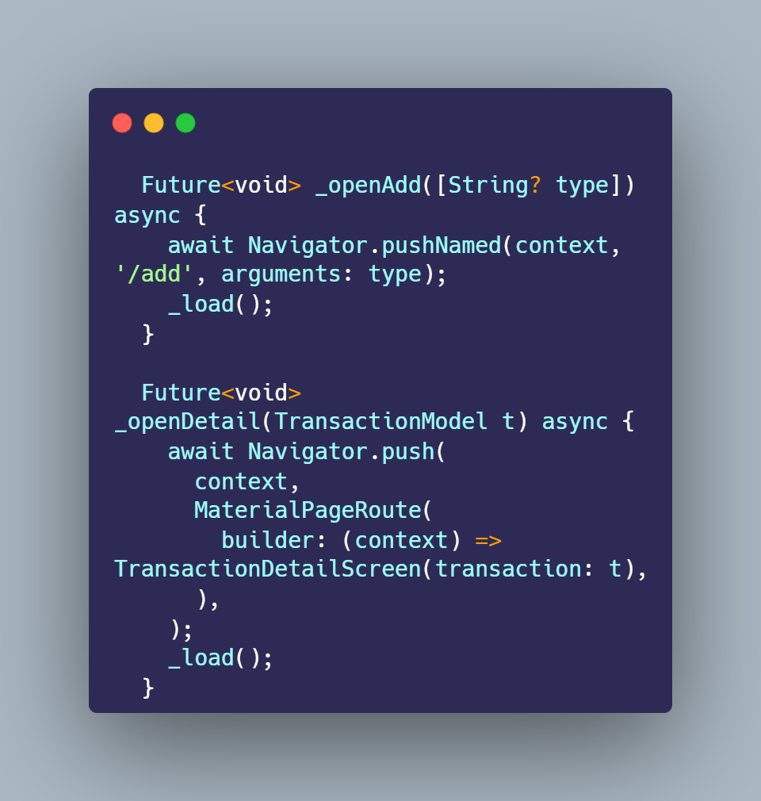
dashboard_screen.dart — Fungsi
_openAdd() dan _openDetail()
Navigasi yang menunggu hasil:
-
Navigator.pushNamed(context, '/add', arguments: type)— membuka form lewat named route sambil mengirim jenis (income/expense) -
Navigator.push(MaterialPageRoute(...TransactionDetailScreen))— membuka detail dengan passing data (Praktikum 4) -
await ...; _load();— setelah halaman ditutup, data dimuat ulang sehingga saldo dan daftar langsung berubah
Kerangka halaman dashboard.
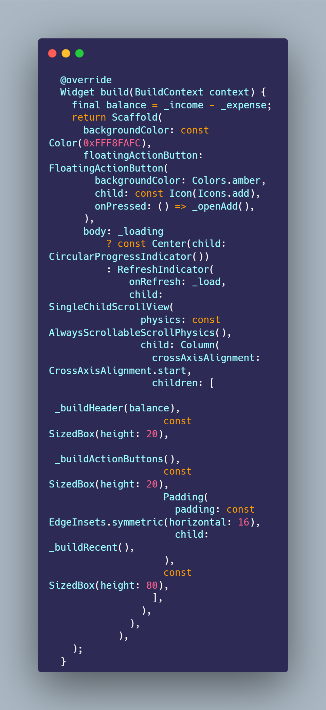
dashboard_screen.dart — Fungsi
build(): Scaffold, FAB, dan RefreshIndicator
Susunan layar:
-
FloatingActionButton— tombol plus menuju form -
_loading ? CircularProgressIndicator : ...— menampilkan loading sebelum data siap -
RefreshIndicator(onRefresh: _load)— tarik layar ke bawah untuk memuat ulang -
SingleChildScrollView— agar layar bisa digulir -
final balance = _income - _expense— rumus saldo
Header amber berisi nama pengguna, saldo, dan ringkasan.
setState memberi tahu
Flutter bahwa state berubah. Nilai bool dibalik,
lalu operator ternary memilih tampilan angka asli atau
bintang.
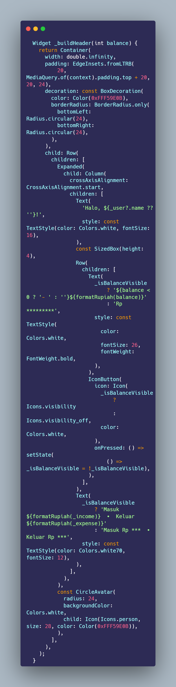
dashboard_screen.dart — Fungsi
_buildHeader(): sapaan, saldo, dan ikon mata
Bagian-bagian header:
-
'Halo, ${_user?.name ?? ''}!'— sapaan nama akun -
_isBalanceVisible ? formatRupiah(balance) : 'Rp *********'— operator ternary yang menampilkan angka atau menyensornya -
IconButton(onPressed: setState(() => _isBalanceVisible = !_isBalanceVisible))— ikon mata membalik nilai boolean -
Icons.visibility / Icons.visibility_off— ikon berubah sesuai status -
BorderRadius.only(bottomLeft, bottomRight)— sudut bawah header membulat
Deretan tombol aksi memakai Row (Praktikum 2).
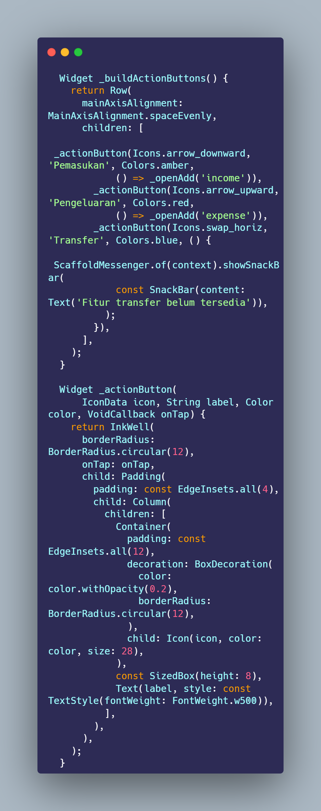
dashboard_screen.dart — Fungsi
_buildActionButtons() dan _actionButton()
Tata letak tombol:
-
Row(mainAxisAlignment: MainAxisAlignment.spaceEvenly)— membagi jarak tombol sama rata -
_actionButton(icon, label, color, onTap)— fungsi pembantu agar kode tombol tidak berulang -
color.withOpacity(0.2)— latar ikon transparan -
_openAdd('income') / _openAdd('expense')— tombol Pemasukan dan Pengeluaran membuka form dengan jenis terpilih
Menampilkan lima transaksi atau pesan kosong.
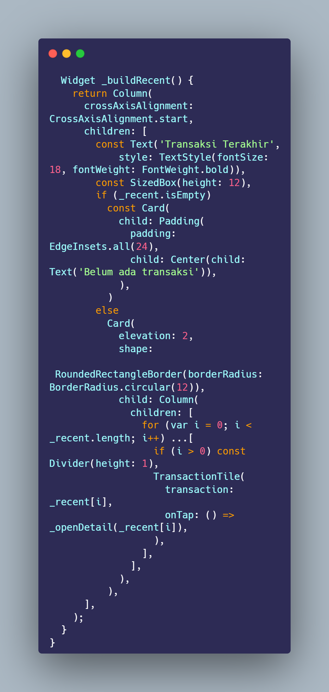
dashboard_screen.dart — Fungsi
_buildRecent(): daftar transaksi terakhir
Dua kondisi tampilan:
-
_recent.isEmpty— menampilkan kartu "Belum ada transaksi" -
for (var i ...) TransactionTile(...)— satu baris untuk tiap transaksi -
const Divider(height: 1)— garis pemisah antar baris -
onTap: () => _openDetail(_recent[i])— ketuk baris membuka detail
Buat file lib/screens/add_transaction_screen.dart.
Dibuat StatefulWidget karena isi form berubah.
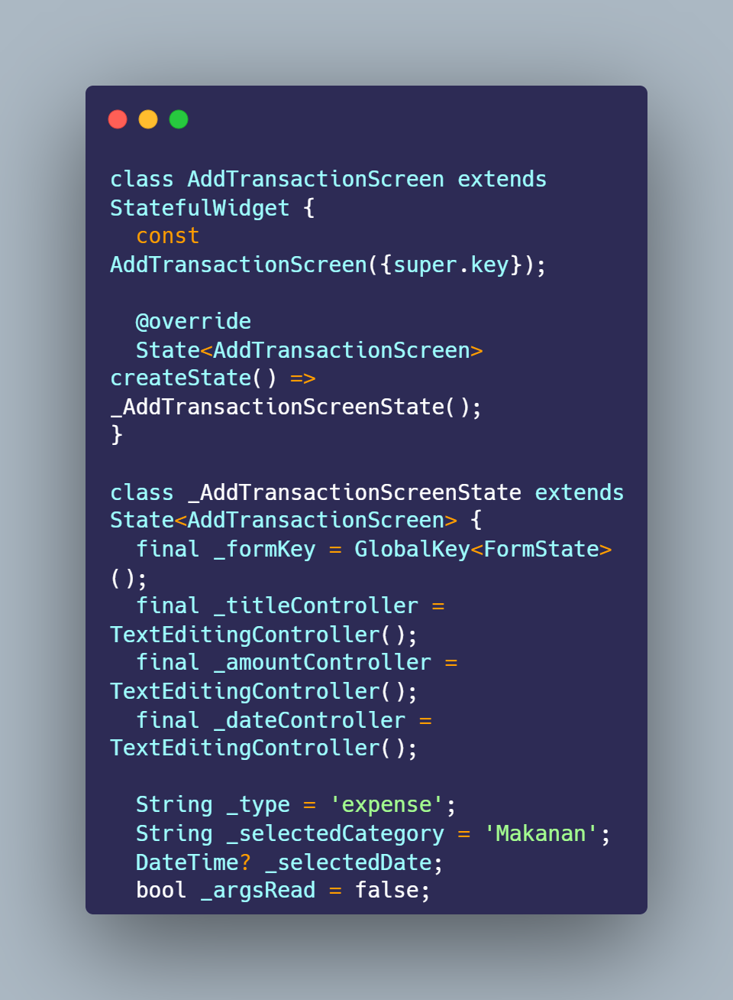
add_transaction_screen.dart —
Variabel state, controller, dan GlobalKey
Penampung isi form:
-
GlobalKey<FormState> _formKey— kunci untuk memicu validasi seluruh form -
TextEditingController _titleController, _amountController, _dateController— membaca teks yang diketik -
String _type = 'expense'— jenis transaksi (default pengeluaran) -
String _selectedCategory— kategori terpilih -
DateTime? _selectedDate— tanggal terpilih;nullbila belum dipilih
Dua fungsi siklus hidup halaman.
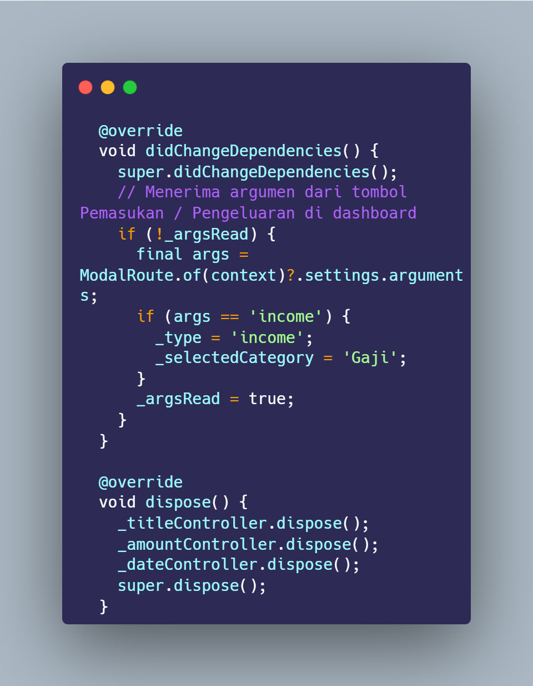
add_transaction_screen.dart —
didChangeDependencies() dan dispose()
Fungsi masing-masing:
-
ModalRoute.of(context)?.settings.arguments— membaca argumen dari tombol dashboard (income/expense) -
_argsRead— memastikan argumen hanya dibaca sekali -
controller.dispose()— membersihkan controller saat halaman ditutup agar tidak boros memori
Membuka kalender dan menyimpan tanggal pilihan.
showDatePicker mengembalikan tanggal pilihan
(atau null jika dibatalkan). Tanggal diformat dan
dimasukkan ke controller sehingga muncul di kolom.
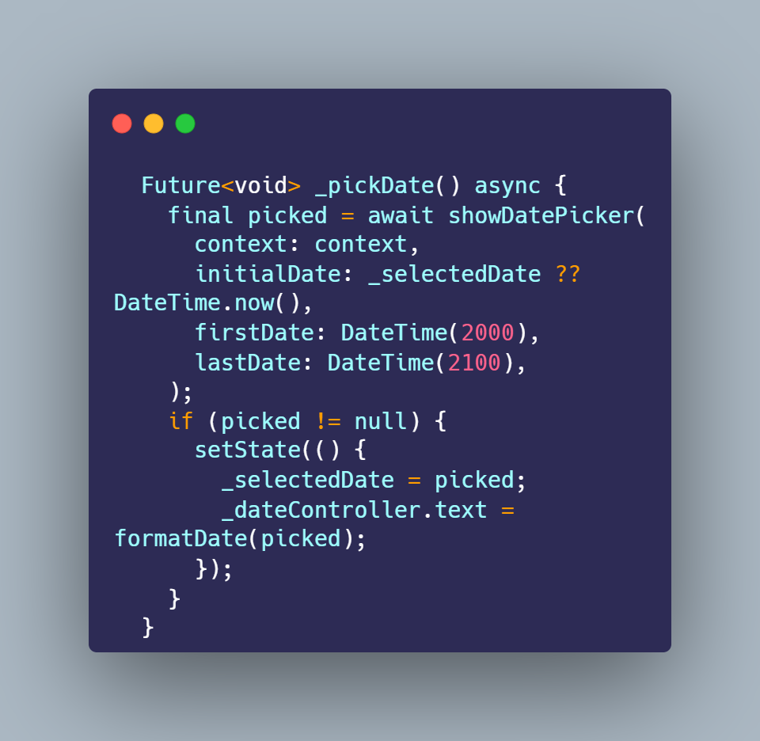
add_transaction_screen.dart —
Fungsi _pickDate()
Alur pemilihan tanggal:
-
showDatePicker(initialDate, firstDate, lastDate)— menampilkan dialog kalender -
if (picked != null)— hanya diproses jika pengguna memilih tanggal -
_dateController.text = formatDate(picked)— menampilkan tanggal format DD/MM/YYYY di kolom
Menyimpan transaksi setelah validasi.
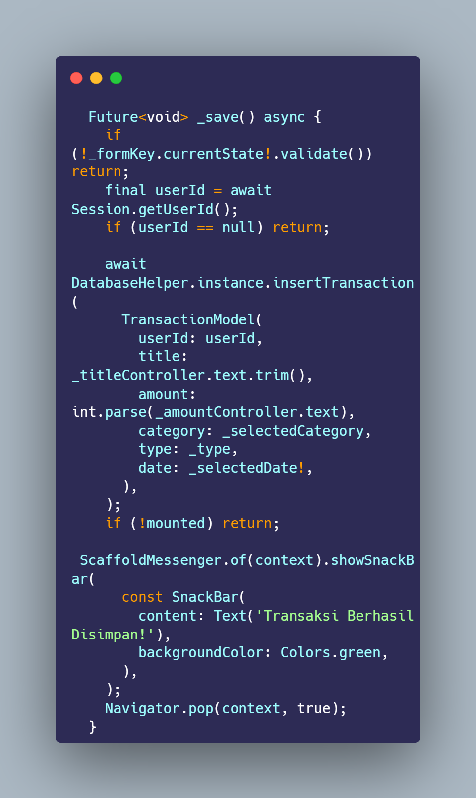
add_transaction_screen.dart —
Fungsi _save()
Urutan penyimpanan:
-
_formKey.currentState!.validate()— menjalankan semua validator; berhenti bila ada yang salah -
Session.getUserId()— menentukan pemilik transaksi -
insertTransaction(TransactionModel(...))— menyimpan baris baru ke tabeltransactions -
int.parse(_amountController.text)— mengubah teks nominal menjadi angka -
ScaffoldMessenger...showSnackBar— pesan transaksi tersimpan -
Navigator.pop(context, true)— menutup form dan kembali ke dashboard (Praktikum 4)
Dua kolom pertama pada Form.
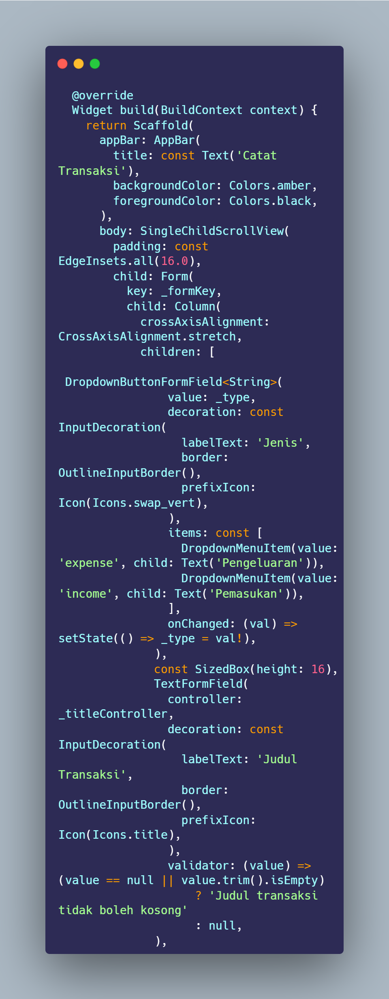
add_transaction_screen.dart —
Fungsi build(): dropdown Jenis dan kolom Judul
Komponen yang dipakai:
-
Form(key: _formKey)— membungkus semua kolom agar bisa divalidasi bersama -
DropdownButtonFormField<String> (Jenis)— pilihan Pengeluaran atau Pemasukan -
validator judul— mengembalikan pesan jika kosong,nulljika valid
Validasi nominal paling ketat.
validator mengembalikan
null bila data valid dan teks pesan bila tidak.
Pesan tampil di bawah kolom secara otomatis.
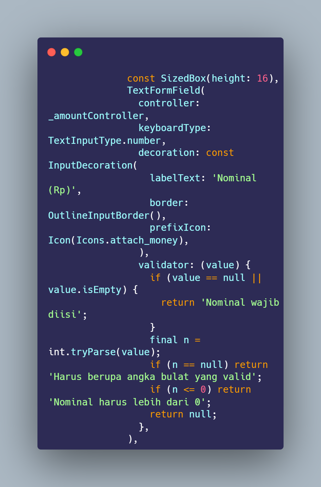
add_transaction_screen.dart —
Kolom Nominal dengan validator angka
Tiga aturan validasi:
-
keyboardType: TextInputType.number— keyboard angka value.isEmpty— menolak kolom kosong-
int.tryParse(value) == null— menolak yang bukan angka bulat n <= 0— menolak nol atau negatif
Bagian akhir form.
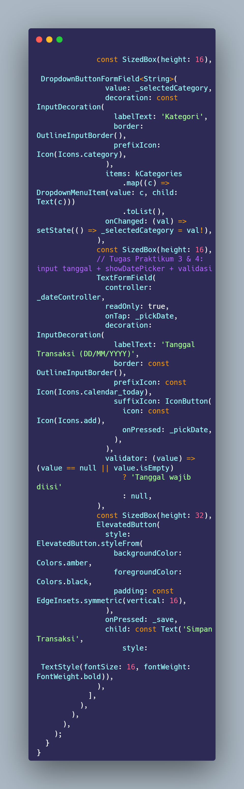
add_transaction_screen.dart —
Dropdown Kategori, kolom Tanggal, dan tombol Simpan
Komponen penutup:
-
items: kCategories.map(...)— daftar kategori darihelpers.dart -
readOnly: true + onTap: _pickDate— kolom tanggal tidak bisa diketik, hanya dipilih lewat kalender -
validator: value.isEmpty ? 'Tanggal wajib diisi'— validasi wajib diisi (tugas tambahan) -
ElevatedButton(onPressed: _save)— memicu penyimpanan
Buat file lib/screens/history_screen.dart. Berisi
daftar transaksi dan status loading.
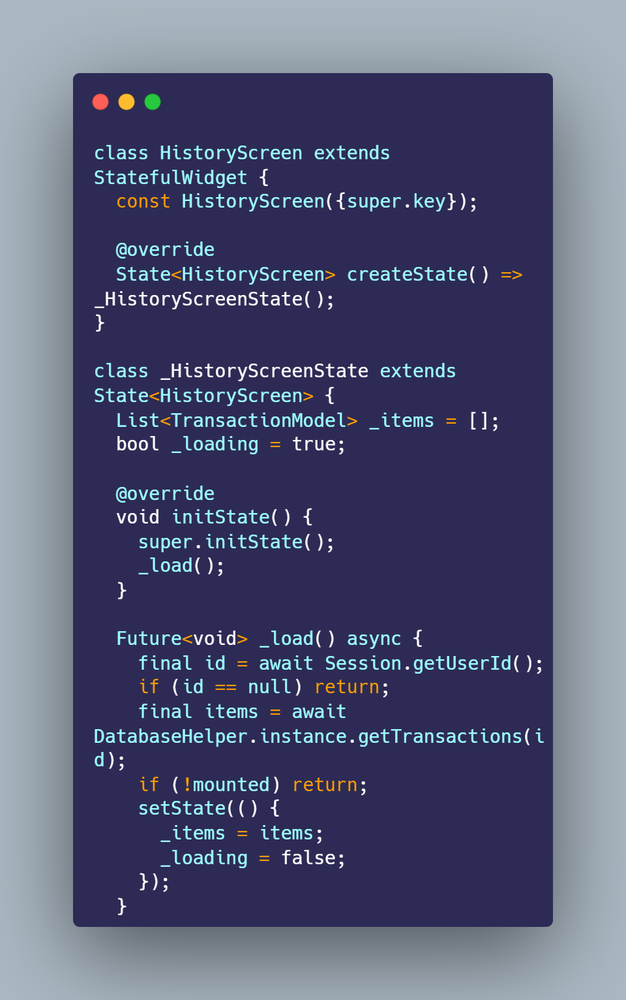
history_screen.dart — State
dan fungsi _load()
Memuat seluruh transaksi:
-
List<TransactionModel> _items— semua transaksi akun -
getTransactions(id)— tanpalimitsehingga seluruh data diambil -
setState(...)— menampilkan hasil dan mematikan loading
Membuka detail dan memuat ulang setelah kembali.
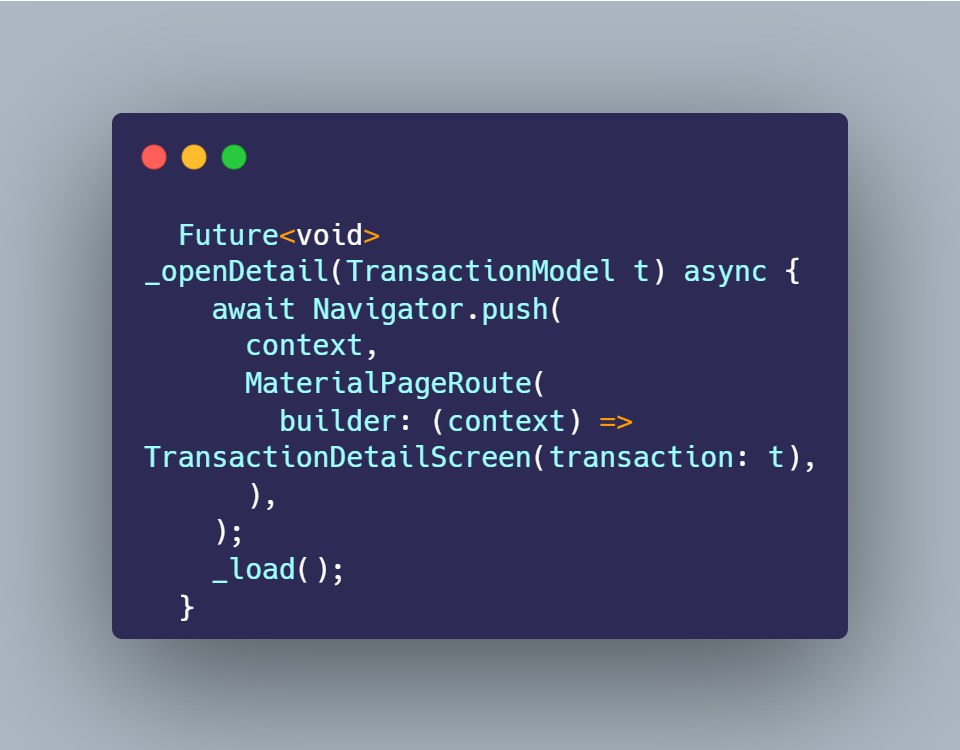
history_screen.dart — Fungsi
_openDetail()
Alur navigasi:
-
Navigator.push(MaterialPageRoute(...))— membukaTransactionDetailScreen -
await ...; _load();— memuat ulang karena transaksi mungkin dihapus di halaman detail
Tiga kondisi tampilan.
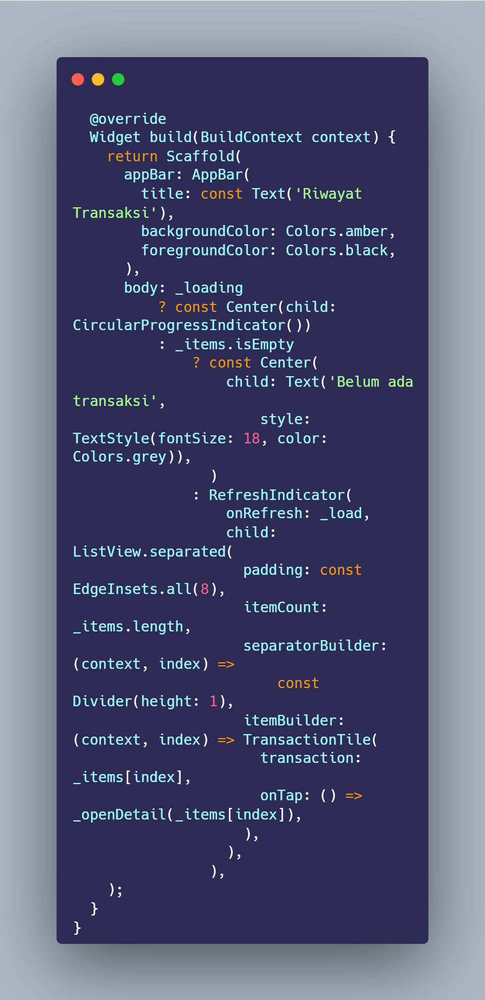
history_screen.dart — Fungsi
build(): ListView.separated
Kondisi tampilan:
_loading— indikator putar-
_items.isEmpty— tulisan "Belum ada transaksi" -
ListView.separated— daftar dengan garis pemisah -
RefreshIndicator— tarik untuk memuat ulang
Buat file lib/widgets/transaction_tile.dart. Dibuat
StatelessWidget karena hanya menampilkan data yang
diterima.
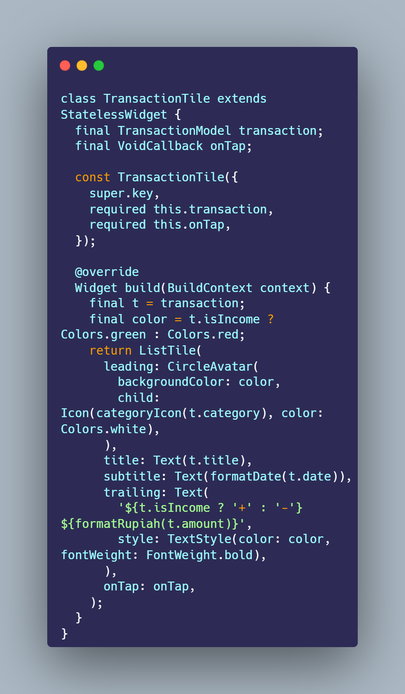
transaction_tile.dart —
Class TransactionTile
Data diterima lewat constructor:
-
final TransactionModel transaction— data yang ditampilkan -
final VoidCallback onTap— aksi ketika baris diketuk -
final color = t.isIncome ? Colors.green : Colors.red— warna sesuai jenis -
CircleAvatar(child: Icon(categoryIcon(t.category)))— ikon sesuai kategori -
'${t.isIncome ? '+' : '-'} ${formatRupiah(t.amount)}'— tanda dan nominal terformat -
subtitle: Text(formatDate(t.date))— tanggal terformat
Buat file
lib/screens/transaction_detail_screen.dart. Halaman
ini StatelessWidget yang menerima data dari halaman
sebelumnya.
final dan constructor
required. Di sini data dikirim sebagai satu objek
TransactionModel.
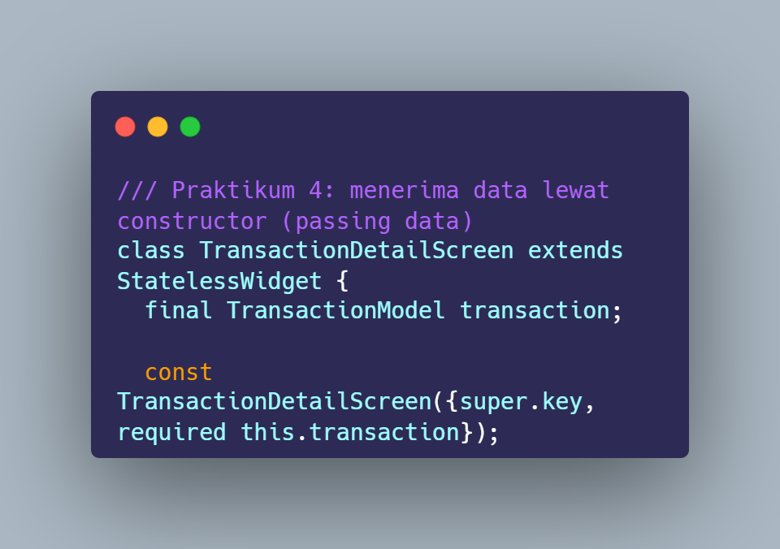
transaction_detail_screen.dart — Class dan
constructor penerima data
Penerima data:
-
final TransactionModel transaction— variabel penampung data -
const TransactionDetailScreen({super.key, required this.transaction})—requiredmewajibkan data dikirim saat berpindah halaman
Menghapus transaksi setelah konfirmasi.
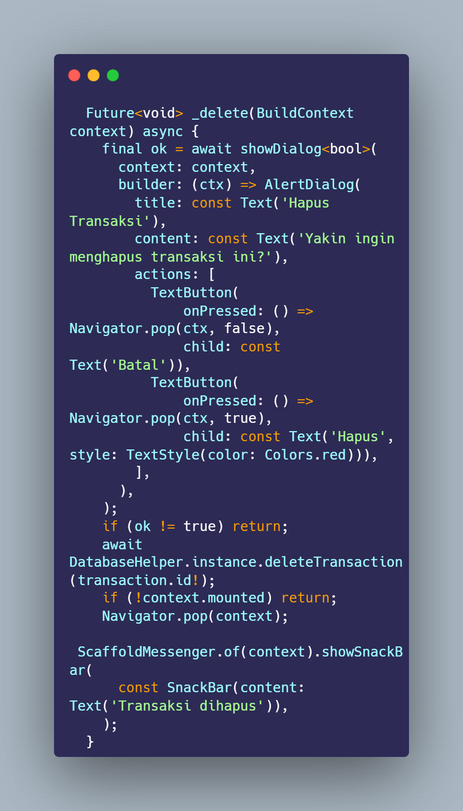
transaction_detail_screen.dart — Fungsi _delete()
Urutan penghapusan:
-
showDialog<bool>(AlertDialog)— dialog konfirmasi Batal/Hapus -
if (ok != true) return— berhenti jika dibatalkan -
deleteTransaction(transaction.id!)— menghapus baris dari database -
Navigator.pop(context)— kembali ke halaman sebelumnya -
if (!context.mounted) return— memastikan context masih valid setelahawait
Menampilkan data transaksi.
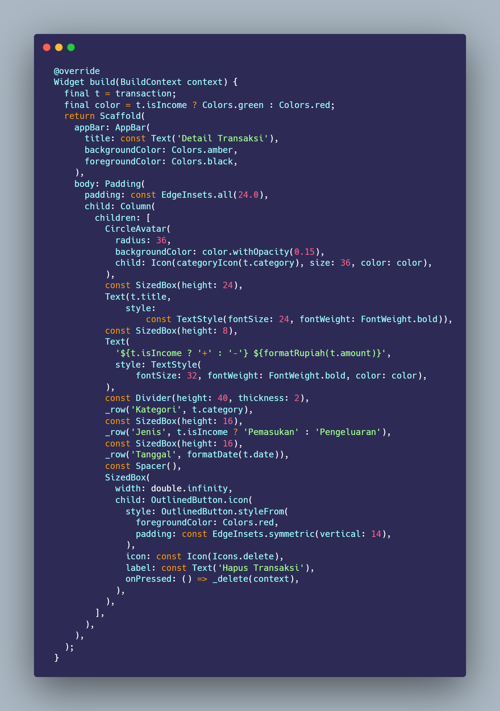
transaction_detail_screen.dart — Fungsi build():
tampilan detail
Bagian tampilan:
-
CircleAvatar + categoryIcon— ikon besar kategori Text(t.title)— judul transaksi-
'${t.isIncome ? '+' : '-'} ${formatRupiah(t.amount)}'— nominal berwarna -
_row('Kategori', t.category)— baris label dan nilai -
OutlinedButton.icon(onPressed: _delete)— tombol hapus
Merapikan baris label dan nilai.
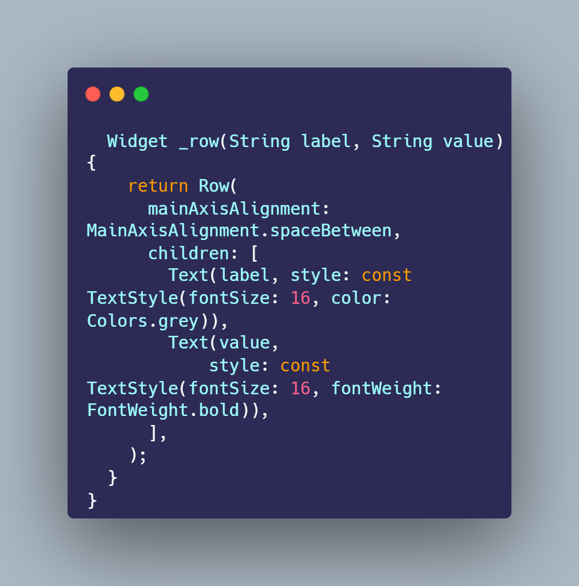
transaction_detail_screen.dart — Fungsi pembantu
_row()
Fungsi tampilan kecil:
-
Row(mainAxisAlignment: MainAxisAlignment.spaceBetween)— label di kiri, nilai di kanan -
_row(String label, String value)— dipanggil berulang untuk kategori, jenis, dan tanggal
Buat file lib/screens/profile_screen.dart.
Menyimpan data pengguna yang sedang login.
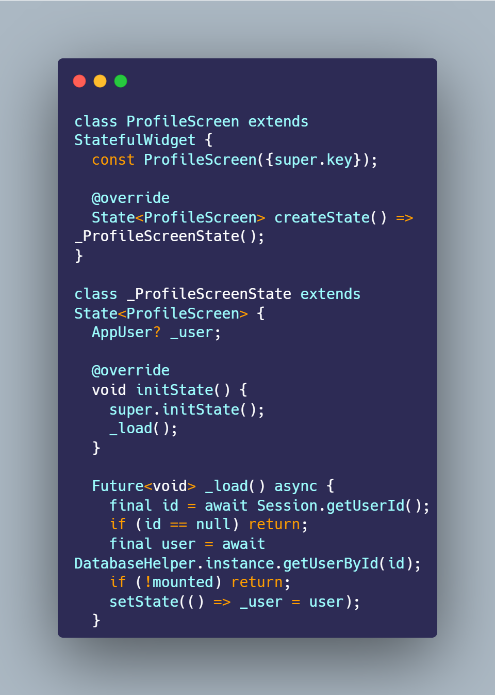
profile_screen.dart — State
dan fungsi _load()
Membaca data akun:
AppUser? _user— data pengguna-
getUserById(id)— membaca nama dan email dari tabelusersberdasarkan id sesi
Mengakhiri sesi.
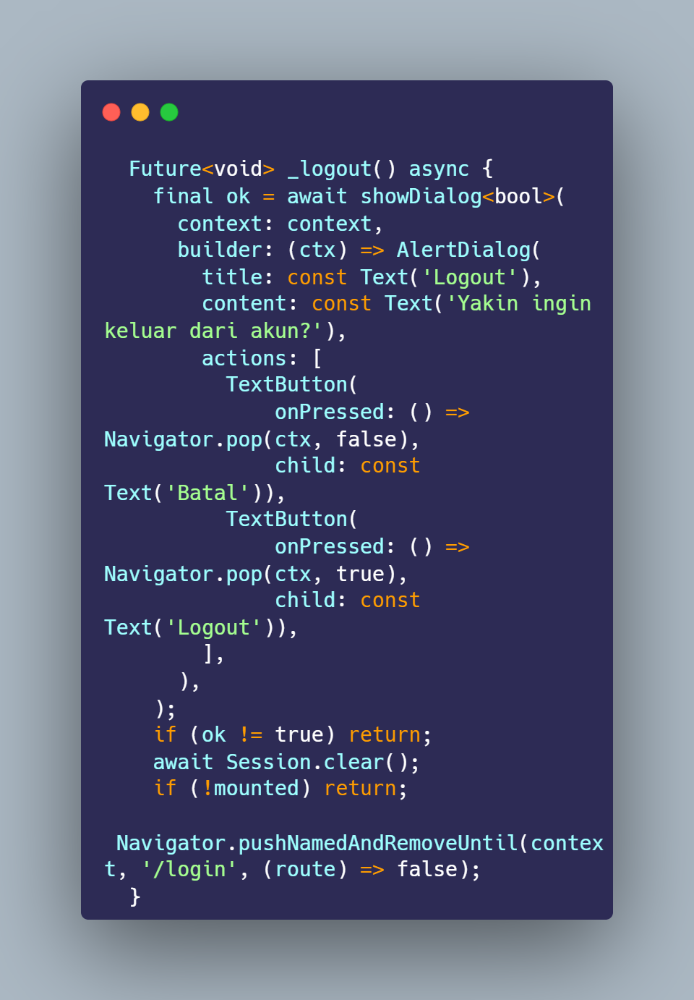
profile_screen.dart — Fungsi
_logout()
Urutan logout:
-
showDialog(AlertDialog)— konfirmasi sebelum keluar -
await Session.clear()— menghapus id pengguna dari penyimpanan -
pushNamedAndRemoveUntil(context, '/login', (route) => false)— menghapus seluruh tumpukan halaman lalu membuka login
Tampilan profil.
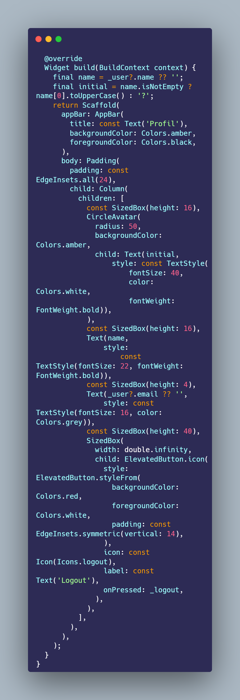
profile_screen.dart — Fungsi
build(): avatar, nama, email, dan tombol logout
Komponen tampilan:
-
name[0].toUpperCase()— huruf pertama nama sebagai isi avatar CircleAvatar(radius: 50)— avatar bulatText(_user?.email)— email akun-
ElevatedButton.icon(onPressed: _logout)— tombol logout merah
users dan transactions, dan berisi
semua fungsi untuk menyimpan, membaca, dan menghapus data.
Seluruh halaman memanggil file ini.
Buat file lib/database/database_helper.dart. Class
dibuat dengan pola singleton.
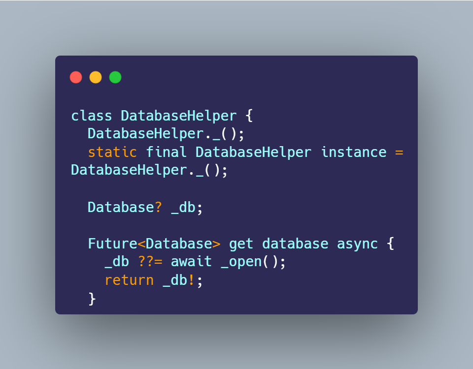
database_helper.dart — Class
DatabaseHelper: singleton dan getter database
Satu koneksi untuk seluruh aplikasi:
-
DatabaseHelper._()— constructor privat sehingga tidak bisa dibuat sembarangan -
static final DatabaseHelper instance— satu-satunya objek yang dipakai bersama -
Database? _db— menyimpan koneksi yang sudah dibuka -
Future<Database> get database— membuka database hanya saat pertama dibutuhkan (lazy)
Fungsi yang membuka (dan membuat) file database.
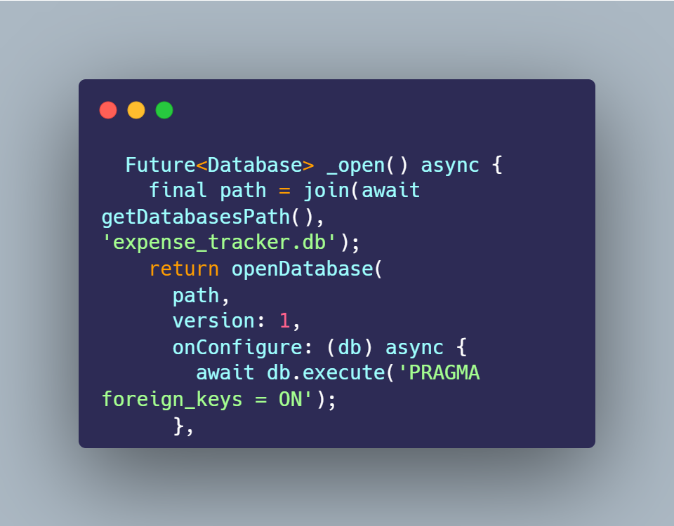
database_helper.dart — Fungsi
_open(): lokasi database dan onConfigure
Pengaturan database:
-
join(await getDatabasesPath(), 'expense_tracker.db')— lokasi file database di perangkat version: 1— versi skema database-
PRAGMA foreign_keys = ON— mengaktifkan aturan foreign key di SQLite
Dijalankan satu kali saat database pertama kali dibuat.
transactions.user_id ke users.id,
sehingga satu pengguna dapat memiliki banyak transaksi.
database_helper.dart —
onCreate: membuat tabel users dan transactions
Struktur tabel:
-
id INTEGER PRIMARY KEY AUTOINCREMENT— id naik otomatis -
email TEXT NOT NULL UNIQUE— tidak boleh ada email ganda -
user_id INTEGER NOT NULL— pemilik transaksi -
FOREIGN KEY (user_id) REFERENCES users(id) ON DELETE CASCADE— transaksi terhubung ke pengguna; ikut terhapus jika pengguna dihapus
Method untuk data pengguna.
database_helper.dart — Fungsi
registerUser(), getUserByEmail(), login(), getUserById()
Fungsi masing-masing:
-
db.insert('users', {...})— menyimpan akun baru; email diubah huruf kecil -
where: 'email = ?', whereArgs: [...]— mencari akun;?diisiwhereArgsagar aman dari SQL injection -
where: 'email = ? AND password = ?'— login berhasil bila email dan hash password cocok -
rows.isEmpty ? null : AppUser.fromMap(rows.first)— mengembalikannulljika tidak ditemukan
Method untuk menambah dan menghapus transaksi.
database_helper.dart — Fungsi
insertTransaction() dan deleteTransaction()
Operasi tulis:
-
t.toMap()..remove('id')— id dibuat otomatis oleh database -
db.insert('transactions', map)— menambah baris baru -
db.delete('transactions', where: 'id = ?')— menghapus satu transaksi berdasarkan id
Mengambil daftar transaksi satu akun.
database_helper.dart — Fungsi
getTransactions()
Query baca:
-
where: 'user_id = ?'— hanya transaksi milik akun yang login (data tiap akun terpisah) -
orderBy: 'date DESC, id DESC'— terbaru di atas -
limit— membatasi jumlah (dipakai dashboard = 5) -
rows.map(TransactionModel.fromMap).toList()— mengubah baris menjadi objek
Menghitung total pemasukan dan pengeluaran.
database_helper.dart — Fungsi
getTotals()
Perhitungan saldo:
-
SELECT type, SUM(amount) ... GROUP BY type— menjumlahkan nominal per jenis -
r['type'] == 'income'— memisahkan total pemasukan dan pengeluaran -
return {'income': ..., 'expense': ...}— saldo dihitung di dashboard: income dikurangi expense
Skema database yang dibuat:
| Tabel | Kolom |
|---|---|
users |
id (PK, auto), name, email (UNIQUE), password (hash) |
transactions |
id (PK, auto), user_id (FK), title, amount, category, type, date |
Isi tabel dapat dilihat langsung selagi aplikasi berjalan dalam mode debug.
android dibuka di Android
Studio
users

transactions
Cara membukanya:
-
File > Open > folder android— membuka bagian Android dari project Flutter -
View > Tool Windows > App Inspection— membuka panel inspeksi -
expense_tracker.db— file database aplikasi -
Live updates— tabel berubah langsung saat data di aplikasi berubah
SharedPreferences) agar
pengguna tetap masuk setelah aplikasi ditutup.
Buat file lib/utils/session.dart. Class berisi tiga
fungsi static.
session.dart — Fungsi
save(), getUserId(), dan clear()
Tiga fungsi sesi:
-
static const _key = 'logged_user_id'— nama kunci penyimpanan -
prefs.setInt(_key, userId)—save: menyimpan id pengguna saat login -
prefs.getInt(_key)—getUserId: membaca id;nullberarti belum login -
prefs.remove(_key)—clear: menghapus sesi saat logout
Buat file lib/utils/helpers.dart. Fungsi pertama
untuk mengamankan password.
helpers.dart — Fungsi
hashPassword()
Password tidak pernah disimpan apa adanya:
-
utf8.encode(password)— mengubah teks menjadi bytes -
sha256.convert(...)— menghitung hash SHA-256 -
.toString()— hasil berupa teks heksadesimal panjang
Pemformat tampilan.
helpers.dart — Fungsi
formatRupiah() dan formatDate()
Format tampilan:
-
value.abs().toString()— mengubah angka ke teks -
if (... % 3 == 0) buf.write('.')— menyisipkan titik tiap tiga digit 'Rp $buf'— awalan Rp-
padLeft(2, '0')— tanggal dan bulan dua digit; hasil DD/MM/YYYY
Daftar kategori dan ikonnya.
helpers.dart — kCategories
dan categoryIcon()
Dua bagian:
-
const List<String> kCategories— isi dropdown kategori -
switch (category)— memilih ikon (fastfood, directions_car, movie, attach_money) -
default: Icons.category— ikon cadangan untuk kategori lain
Buat file lib/screens/register_screen.dart.
StatefulWidget berisi form.
register_screen.dart —
State, controller, dan dispose()
Penampung isian:
_formKey— kunci form-
_nameController, _emailController, _passwordController, _confirmController— empat controller -
_obscure— menyembunyikan atau menampilkan password _loading— status prosesdispose()— membersihkan controller
Logika pendaftaran.
register_screen.dart —
Fungsi _register()
Alur pendaftaran:
-
validate()— berhenti jika ada isian salah -
getUserByEmail(...) != null— email sudah terdaftar, tampilkan pesan merah -
registerUser(name, email, hashPassword(password))— menyimpan akun dengan password ter-hash -
SnackBar hijau lalu Navigator.pop(context)— pesan berhasil dan kembali ke login
Empat kolom dengan validasi.
register_screen.dart —
Fungsi build(): kolom dan validator
Aturan validasi:
-
value.trim().isEmpty— nama dan email wajib diisi -
!value.contains('@')— email harus memuat @ -
value.length < 6— password minimal enam karakter -
value != _passwordController.text— konfirmasi harus sama -
suffixIcon: IconButton— ikon mata pada password
Buat file lib/screens/login_screen.dart.
StatefulWidget dengan dua kolom.
login_screen.dart — State
dan controller
Penampung isian:
-
_emailController, _passwordController— isian login _obscure— mode sembunyi password-
_loading— menonaktifkan tombol saat proses
Logika login.
pushNamedAndRemoveUntil(..., (route) => false)
menghapus seluruh tumpukan halaman sehingga tombol back tidak
mengembalikan ke login.
login_screen.dart — Fungsi
_login()
Alur login:
validate()— validasi isian-
login(email, hashPassword(password))— mencocokkan dengan database -
user == null— tampilkan SnackBar "Email atau password salah" -
await Session.save(user.id!)— menyimpan sesi -
pushNamedAndRemoveUntil(context, '/main', (route) => false)— masuk ke halaman utama tanpa bisa kembali ke login
Logo, dua kolom, tombol Login, dan tautan Daftar.
login_screen.dart — Fungsi
build(): tampilan login
Komponen tampilan:
-
Icon(Icons.account_balance_wallet)— logo aplikasi -
TextFormField email dan password— dengan validator wajib diisi -
ElevatedButton(onPressed: _loading ? null : _login)— tombol nonaktif saat loading -
Navigator.pushNamed(context, '/register')— tombol Daftar menuju halaman register
Video menjelaskan kode, mendemokan aplikasi di emulator, dan menunjukkan isi database.
Urutan isi video:
-
Kode— struktur folder, main.dart, database_helper.dart, tiap halaman -
Demo— register, login, transaksi, riwayat, detail, profil, logout -
Database— tabel users dan transactions di Database Inspector
Sebelum build, Android toolchain pada
flutter doctor harus bertanda centang.
Hal yang diperiksa:
-
flutter doctor— memeriksa lingkungan Flutter dan Android -
NDK 28.2.13676358— dipasang lewat SDK Manager bila build memintanya
APK dibuat dengan perintah
flutter build apk --release.
flutter build apk --release sukses
build\app\outputs\flutter-apk\app-release.apk
Pada hasil build:
-
--release— build optimal untuk dibagikan -
app-release.apk— file yang dipasang ke HP Android
File APK dikirim ke HP lalu dipasang untuk membuktikan aplikasi berjalan di perangkat nyata.


Langkah di HP:
-
Kirim app-release.apk— lewat kabel USB, Drive, atau aplikasi chat -
Izinkan sumber tidak dikenal— diperlukan karena APK tidak berasal dari Play Store -
Install lalu Buka— aplikasi tampil dengan halaman login
Seluruh fitur diuji pada emulator Pixel 6 dan APK diuji pada HP Android. Setiap pengujian dibuktikan dengan tangkapan layar.
Semua validator menolak input salah dan menampilkan pesan di bawah kolom.
Akun baru tersimpan; email yang sama ditolak berkat kolom
UNIQUE dan pengecekan getUserByEmail.
Login gagal untuk password salah dan berhasil untuk data benar, lalu masuk ke Beranda dengan nama akun.
Transaksi tersimpan dan saldo terhitung otomatis. Pemasukan hijau (+), pengeluaran merah (-).
Rp *********
setState membalik _isBalanceVisible:
saldo disensor saat ikon ditekan dan tampil kembali saat ditekan
lagi.
Data detail sesuai baris yang diketuk; setelah dihapus, baris hilang dari riwayat dan saldo diperbarui.
Sesi dan transaksi tetap ada. Ini membuktikan penyimpanan SQLite
dan SharedPreferences bekerja.
Data tiap akun terpisah karena query selalu memakai
WHERE user_id = ?.
users dengan kolom password
berupa hash
transactions beserta kolom
user_id
Password tersimpan sebagai hash SHA-256, bukan teks asli; setiap perubahan di aplikasi langsung terlihat di tabel.
APK berhasil dipasang dan semua fitur berjalan di perangkat nyata.
Tab berpindah tanpa berpindah Scaffold; data dimuat
ulang dari database setiap tab dibuka atau layar ditarik.
Nama dan email dibaca dari tabel users berdasarkan
id sesi.
Pembahasan. Penggabungan praktikum 1–5 berhasil: navigasi memakai named routes, tampilan memakai widget dan layout praktikum, input memakai form tervalidasi, dan data berasal dari SQLite. Perbedaan utama dari praktikum sebelumnya adalah data tersimpan permanen dan setiap akun punya data sendiri. Keterbatasan: password di-hash tanpa salt, dan tombol Transfer bawaan desain praktikum tidak dikembangkan.
Kesimpulan praktikum ini:
- Praktikum 1–5 berhasil digabung menjadi satu project Expense Tracker dengan desain UI/UX tetap dipertahankan.
-
SQLite (
sqflite) membuat data tidak hilang walau aplikasi ditutup. -
Register dan login berfungsi, dengan password ter-hash SHA-256
dan sesi di
SharedPreferences. -
Data setiap akun terpisah melalui kolom
user_id. - Aplikasi berhasil dibuild menjadi APK dan berjalan di HP Android.
Seluruh source code praktikum ini dapat diakses pada repository Github berikut:
Video penjelasan: tempel link video di sini